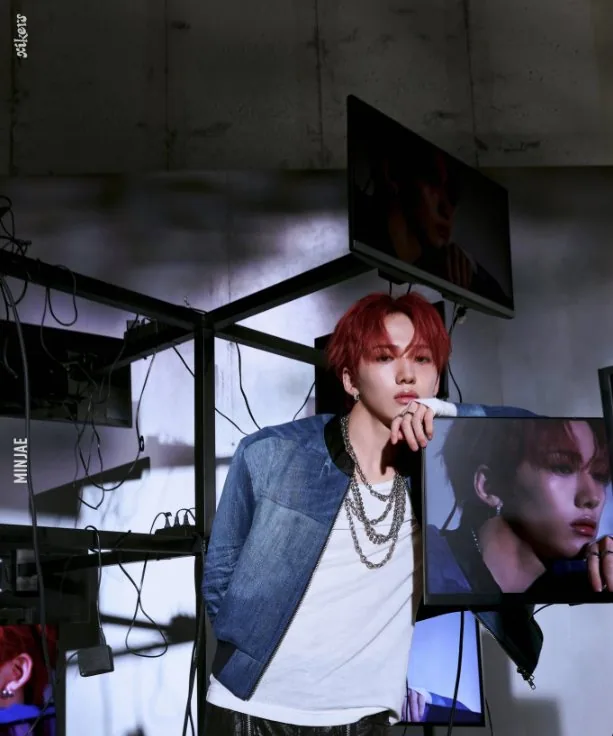
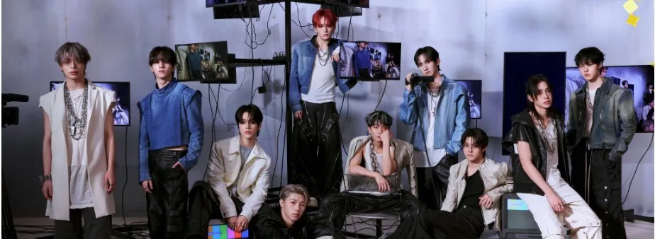
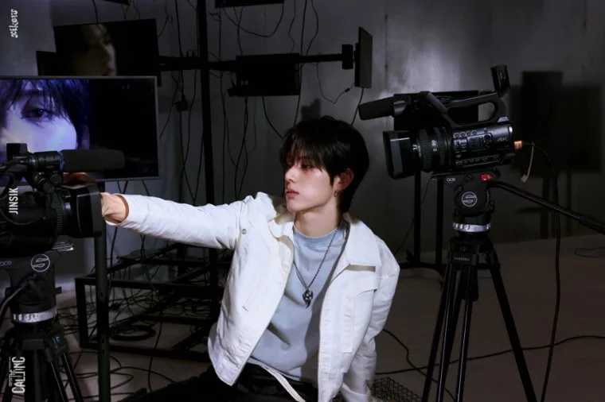
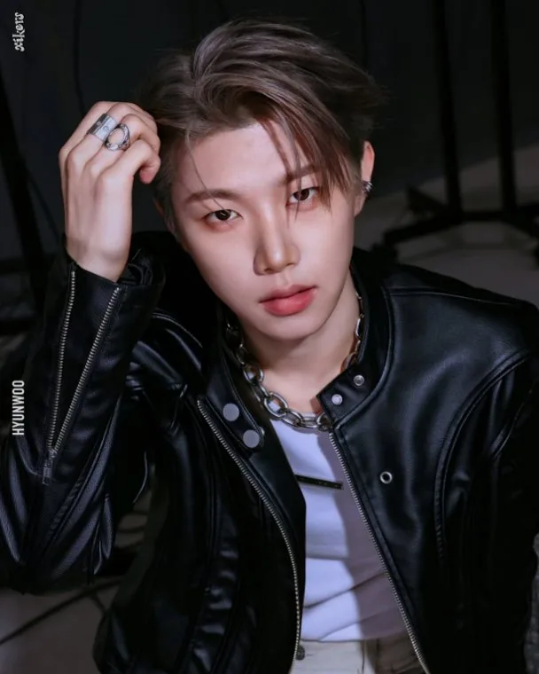
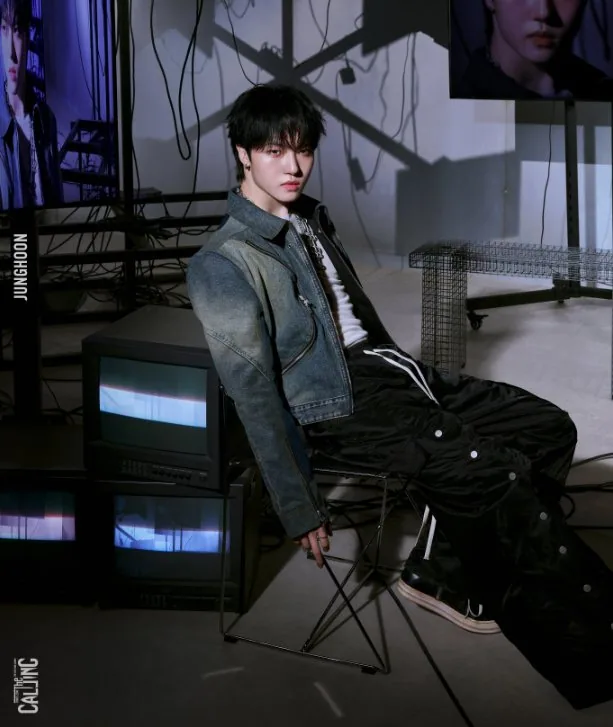
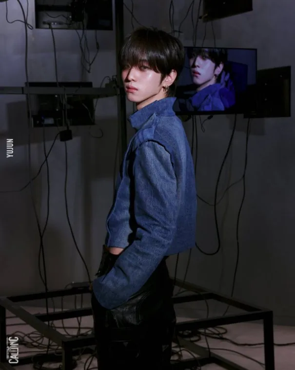
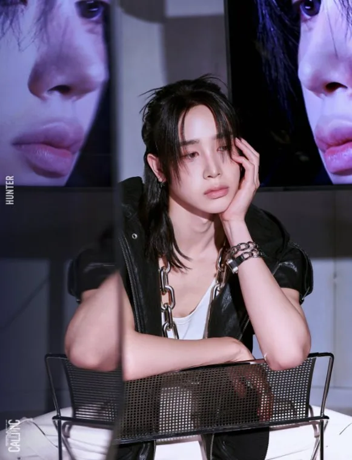
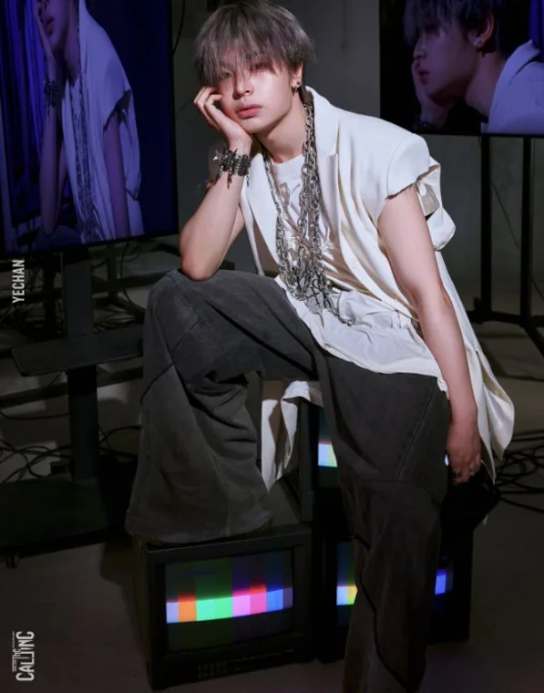

Minjae
Minjae (민재) · Leader, Danseur principal, Rappeur principal, Vocaliste secondaire · Coréen

K-POP
Découvre xikers et les profils de ses membres sur IBASE Asian Pop.
Ouvrir la fiche interactiveHistoire : xikers (싸이커스) est un boy group de 10 membres de KQ Entertainment, le deuxième groupe de la maison après ATEEZ. Avant ses débuts, il s'appelait KQ Fellaz 2 : les dix trainees ont été présentés en août 2022, puis le nom xikers a été dévoilé le 24 février 2023. Le nom associe « x », les coordonnées inconnues, et « hikers », des voyageurs : dix garçons qui voyagent à travers le temps et l'espace à la recherche de leurs coordonnées. Le groupe débute le 30 mars 2023 avec le mini-album « HOUSE OF TRICKY : Doorbell Ringing ». Hunter, le seul membre non coréen, est thaïlandais. Junghoon a fait une pause en mai 2023 pour se remettre d'une opération du genou, et est revenu à ses activités en janvier 2025.
Débuts : 30 mars 2023 (mini-album « HOUSE OF TRICKY : Doorbell Ringing »)
Agence : KQ Entertainment

Minjae (민재) · Leader, Danseur principal, Rappeur principal, Vocaliste secondaire · Coréen
Junmin (준민) · Danseur principal, Vocaliste · Coréen
Sumin (수민) · Rappeur principal · Coréen

Jinsik (진식) · Vocaliste principal · Coréen

Hyunwoo (현우) · Vocaliste principal · Coréen

Junghoon (정훈) · Vocaliste · Coréen
Seeun (세은) · Vocaliste secondaire, Rappeur secondaire · Coréen

Yujun (유준) · Vocaliste secondaire · Coréen

Hunter (헌터) · Danseur principal, Vocaliste secondaire · Thaïlandais

Yechan (예찬) · Rappeur principal, Danseur principal, Vocaliste secondaire, Maknae · Coréen